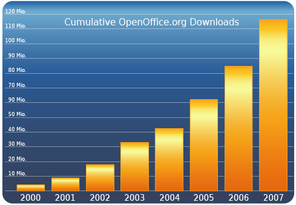

|
 |
Give a Door – Get a House ::
Developers Wanted! |
|
|
|
|
What is OpenOffice.org?
For users, OpenOffice.org is
the world's leading open-source office productivity suite. It
has been downloaded more than 100 million times to
date and reaches a broad audience across fields of applications,
languages, and cultures.
For developers, OpenOffice.org
is much more than that. OpenOffice.org provides a complete, open
and free development platform that provides cross-platform compatibility
and great extensibility.
With more than 7 million lines of code, 28 single
projects, 100 localized languages, and around 1,000 contributors,
OpenOffice.org is one of the world's leading open source
community in terms of size, vibrancy, and vitality.

|
|
The OpenOffice.org
Philosophy
We design and create, as a community, an easy
to use and feature rich office suite running on all major platforms
based on open standards like OpenDocument and XML.
|
|
UNO, you know!
At the core of OpenOffice.org is the OOo
API,
commonly referenced as UNO - Universal Network Objects. The UNO
API is designed to bind to several languages including Java,
Python, C++, and Javascript allowing developers to interact with
and extend the use of the office suite.
Use web services to connect to the internet, use
COM and OLE to connect to other applications on the system, or
access system resources directly through CLI.
|
|
Share your Code
Share your code to the world with the
OO-Snippets-Project – a code repository for developers
on different components and different languages.
Whatever it is, C++, Java, Basic, or Python: you
will be able to see how developers contribute day in and day out
with different snippets of reusable code.
|
|
Extend, Expand
and Customize
With the Extensions feature, you don't need a
high level of understanding of the UNO API to start extending
OOo into places you didn't think possible.
Use your own tools to expand functionality and
even better, easily integrate with other applications you develop
by using common standard protocols.The OpenOffice.org Extensions
capability is so powerful that you can already find a growing body
of commercial and free extensions in the
OpenOffice.org Extension Repository.
|
|
ODF — Open
Standard
Users create millions of documents using office
software every day. Safeguard the future of these documents by
using the power, flexibility and openness of Open
Document Format (ODF). ODF was the first open and ISO standardized office document
format. Use ODF and guarantee
compatibility of your company's knowledge with future waves of
technology.
|
|
Powerful Scripting
OpenOffice.org comes with OpenOffice.org
Basic,
an object oriented language with which you can access components
deep within the UNO API in the form of services.
The ease of use of OpenOffice.org Basic, combined
with the power of the UNO API, creates an environment for both
rapid and powerful development and integration.
Not a Basic fan? What about the popularity of Javascript or the elegance of Python? The OpenOffice.org scripting framework
gives you flexibility to choose your development language, while
giving you complete access to native libraries in different languages.
|
|
Read the Fine Manual
Comprehensive documentation is available in the
Developers' Guide explaining the internals of OpenOffice.org
and hidden secrets of the powerful API. You are always welcome
to the IRC development channel for 24x7 support, where experienced
developers mentor newcomers.
The OpenOffice.org website also holds a complete
list of support mailing lists for developers, on all components
and all technologies. Join and participate in specialized technical
conversations with experienced OpenOffice.org developers.
|
|
|